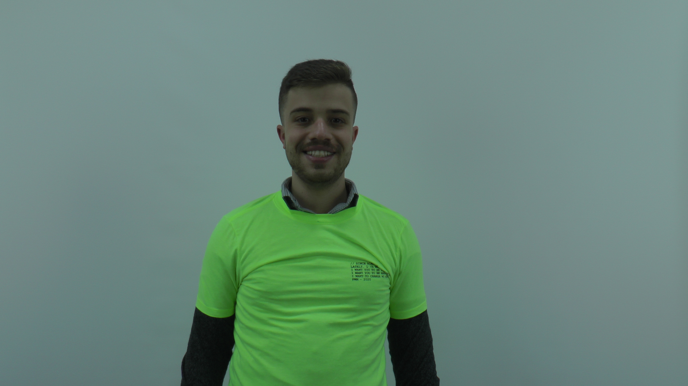
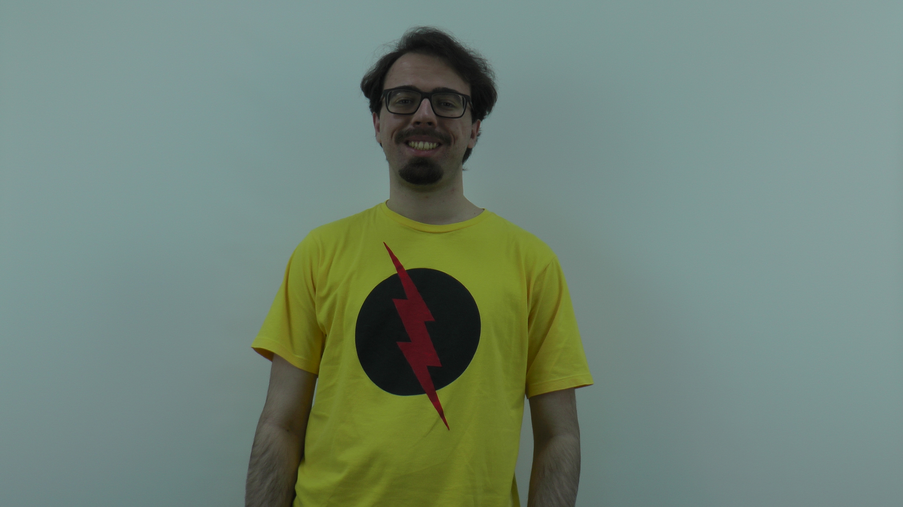
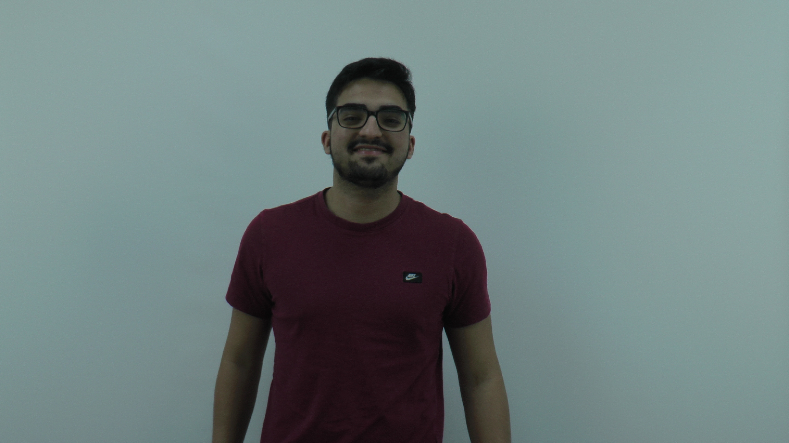

Laboratório 2
Fotos Combinadas
Fotos do Grupo todo
Essa foto foi tirada com uma camera profissional e o preto e branco foi gerado diretamente via css
.black-white {
-webkit-filter: grayscale(100%);
filter: grayscale(100%);
}

Fotos em preto e branco
Essas fotos foram tiradas com uma camera profissional e o preto e branco foi gerado diretamente via css
.black-white {
-webkit-filter: grayscale(100%);
filter: grayscale(100%);
}





Foto com resolução x1.25

print(img_gray.shape)
img2 = cv.resize(img_gray, None, fx=1.25, fy=1.25, interpolation = cv.INTER_CUBIC)
print(img2.shape)
cv2_imshow(img2)
Foto com resolução x0.75

print(img_gray.shape)
img2 = cv.resize(img_gray, None, fx=0.75, fy=0.75, interpolation = cv.INTER_CUBIC)
print(img2.shape)
cv2_imshow(img2)
Vídeo Lento
Comando Utilizado:
ffmpeg -i video-lento.mp4 -vf "scale=iw/2:ih/2" output2.mp4
Vídeo Rápido
Comando Utilizado:
ffmpeg -i video-rapido.mp4 -vf "scale=iw/4:ih/4" output4.mp4